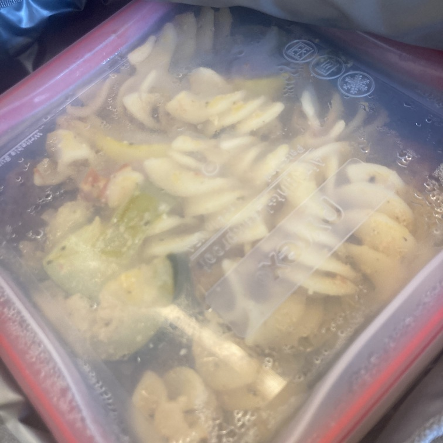

Veg Pasta

Description
This is a recipe for a vegetable laden pasta with a rich pesto-style sauce that "Mad" made this Summer.
Ingredients
- 1 Zucchini
- 1 Yellow Squash
- 1 Bell Pepper
- Box of Pasta (any shape)
- Handful of Peanuts
- Handful of Basil
- 3 Garlic
- Olive Oil
- Mozarella Cheese
Steps
- Bring water to a boil and make pasta per box instructions
- Halve and slice the zucchini and yellow squash
- Dice the bell pepper
- Sautee the bell pepper, after 2 minutes add zucchini and squash
- Combine olive oil, peanuts, basil, and garlic in a food processor
- Add pasta to sauteed vegetables
- Stir in pesto
- Plate pasta, sprinkle mozarella cheese on top